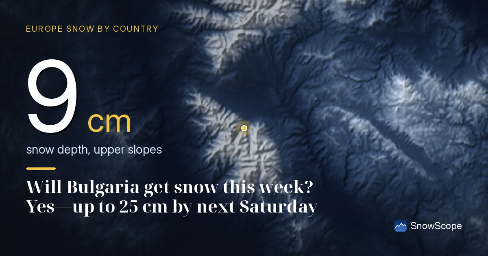
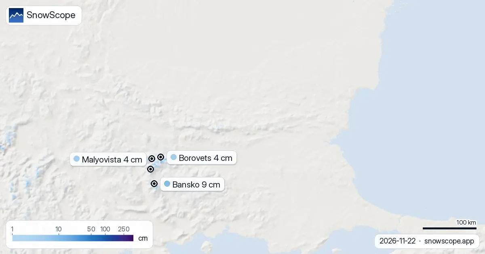

Will Bulgaria get snow this week? Yes—up to 25 cm by next Saturday
Will Bulgaria get snow this week? Yes—a substantial snow event is coming to the high peaks, with up to 25 cm forecast over the next 7 days and a peak of 10 cm on 28 November. Right now, only the highest slopes hold snow, but Bansko and the Rila Mountains are already leading the way with fresh cover.
See the live snow forecast for Bansko in the SnowScope appSnow depth, powder alerts and the 3D map, free.
Major snow event next Saturday
The pattern is clear: a storm system will bring significant precipitation to Bulgaria's mountains between now and 28 November. Our snow model estimates up to 25 cm of new snow will fall across the high country over the next 7 days, with the heaviest falls on Saturday 28 November, when 10 cm is forecast. This is the kind of event that resets the season in the high mountains.
In the next 3 days alone, up to 7 cm is possible, so the mountains will be working hard to build a base. This timing matters: the Rila Mountains have already captured 7 cm in the past 72 hours, while Vitosha and the Pirin range have each picked up 4 cm. Bansko now sits at 9 cm depth and is the leader among the ski areas.
| Resort | Snow depth | New snow, 72 h | Coming, next days | Top |
|---|---|---|---|---|
| Bansko | 9 cm | 3 cm | 7 cm | 2,516 m |
| Borovets | 4 cm | 4 cm | 8 cm | 2,538 m |
| Malyovista | 4 cm | 3 cm | 7 cm | 1,974 m |
| Kartala | 1 cm | 3 cm | 8 cm | 2,245 m |
| Dobrinishte | 1 cm | 3 cm | 6 cm | 2,226 m |

Today's snow is high and sparse
Right now, snow covers only about 1 percent of Bulgaria's mapped terrain. The snow line sits at 2,300 m, so only peaks above that height hold any depth. Below 2,000 m, the ground is bare. At 2,000–2,500 m, mean depth is just 1 cm with 35 percent coverage. Only above 2,500 m is there meaningful snow: a mean of 5 cm covers 93 percent of that band.
The five ski resorts with any snow today (Bansko, Borovets, Malyovista, Kartala, and Dobrinishte) range from 1 to 9 cm. Bansko's 9 cm at 2,516 m is the deepest, but even that is early-season thin. Borovets, at 2,538 m, has 4 cm. This is thin cover—rocks will be close underneath, and the snow is not yet stable.
Where to watch for the best snow
The Rila Mountains are your beacon right now. They received 7 cm in 72 hours and are forecast to gain another 7 cm in the next 3 days. Bansko, which sits in the Pirin range to the south, already has 9 cm and should gain 7 cm by Wednesday. Borovets, in the Rila system, has 4 cm now but is forecast to pick up 8 cm, making it a close second for depth by mid-week.
By the end of next week, after the main storm on Saturday, the high terrain above 2,500 m will be the safest bet for skiing. Lower slopes and open terrain will remain thin until more snow consolidates. Watch the forecast closely: 10 cm on one day, then 25 cm by the weekend, is a real shift from today's sparse cover.
How the weather is shifting
Bulgaria has been in a dry spell. A week ago, 440 km² of the high country had snow cover; today, only 420 km² does. The trend line shows that the past week saw cover collapse from 690 km² on 16 November to just 100 km² by 20 November—a dramatic melt-back in the face of warm air. Then, on 21 November, the picture changed: Bansko jumped from 2 cm to 10 cm in one day, a sign that precipitation arrived.
Today's snapshot—420 km² covered, 3 cm new snow in 72 hours—marks the edge of that transition. The incoming system is part of a larger pattern. Romania, to the north, is already whitening (25 percent cover) and is forecast to gain up to 51 cm in the next 7 days, so the same air mass will push snow into Bulgaria.
What the next few days hold
Between now and 25 November, most areas will see 6–8 cm of new snow, with the highest slopes (above 2,500 m) gaining the most. Bansko is forecast 7 cm, Borovets 8 cm, and Kartala 8 cm. By Wednesday, all five snow-bearing resorts will have more depth than today.
Then comes the main event: Saturday 28 November, when 10 cm is modelled to fall. That is the snowiest day in the forecast window. The week beyond (days 8–14) is quieter—only 8 cm—so the bulk of November's snow arrives this Saturday and the days leading up to it.
Why the mountains matter now
Early-season snow in Bulgaria's dry mountains is precious because the base is thin and new snow is the only builder. With rocks just beneath the surface, every centimetre counts. The 25 cm forecast for the next 7 days will transform the high peaks from sparse to skiable, but only above 2,500 m—lower slopes will still be thin.
If you plan to venture off-piste when this new snow lands, check the official avalanche bulletin for the Bulgarian mountains. New snow on a thin base can slide, especially on steep terrain. Watch the forecast for Saturday; that is when the season really starts to take shape.
Tips for skiers
- Stay high: above 2,500 m the best snow will form after Saturday's storm. Below 2,000 m remains bare.
- Bansko and Borovets will lead in depth by mid-week. Watch these two resorts first when deciding where to ski.
- Saturday 28 November is the key day: 10 cm is forecast to fall. Plan to be on the mountain to experience the transition from thin to buildable snow.
- Before going off-piste, check the official avalanche bulletin for Bulgaria. New snow on a thin base is a slip hazard on steep slopes.
- Early-season snow sits on rocks. Expect thin cover in gullies and expect rocks to show through on less-steep terrain until depth builds further.
About these numbers
Resort snow depths are the deepest snow on the resort's upper slopes from the SnowScope snow model (about 1 km, run of 22 November); they are estimates for an area, not a measurement at one point. Station values are measurements on the date shown. Forecasts can change. Always read the official avalanche bulletin before going off-piste.
Cite this report
For research, teaching or the press: the numbers and charts are free to reuse under CC BY 4.0 with this citation.
SnowScope (2026), Will Bulgaria get snow this week? Yes—up to 25 cm by next Saturday, https://snowscope.app/blog/en/2026/11/bulgaria-snow-on-the-way-22-november-2026.html, accessed 2026-11-22
SnowScope (Atlas Labs). (2026, November 22). Will Bulgaria get snow this week? Yes—up to 25 cm by next Saturday. SnowScope snow reports. https://snowscope.app/blog/en/2026/11/bulgaria-snow-on-the-way-22-november-2026.html
BibTeX
@misc{snowscope2026bulgariasnowontheway22no,
author = {{SnowScope (Atlas Labs)}},
title = {Will Bulgaria get snow this week? Yes—up to 25 cm by next Saturday},
year = {2026},
month = nov,
howpublished = {\url{https://snowscope.app/blog/en/2026/11/bulgaria-snow-on-the-way-22-november-2026.html}},
note = {Published 2026-11-23 00:50 UTC; accessed 2026-11-22}
}· CC BY 4.0 · Methods, data and tools →
Bansko: snow and temperature by height, this winter vs last (tools) →
Follow Bansko
Free: a message when fresh snow is coming, and the forecast every morning.
More snow reports

Snow is falling on Slovenia's ski mountains today: about 37 cm on Kanin and 21 cm on Krvavec. Where the snow lies, how it compares with past winters, and the next snowy day.

Tornik on Zlatibor had up to 39 cm on its upper slopes on 15 November 2026; by Wednesday it had melted. Kopaonik barely turned white. The week day by day and what comes next.

Savin Kuk above Žabljak picked up 22 cm of snow from 13 to 19 November and still has 6 cm today. Kolašin 1450 and 1600 are bare. The week day by day, and the next chances.